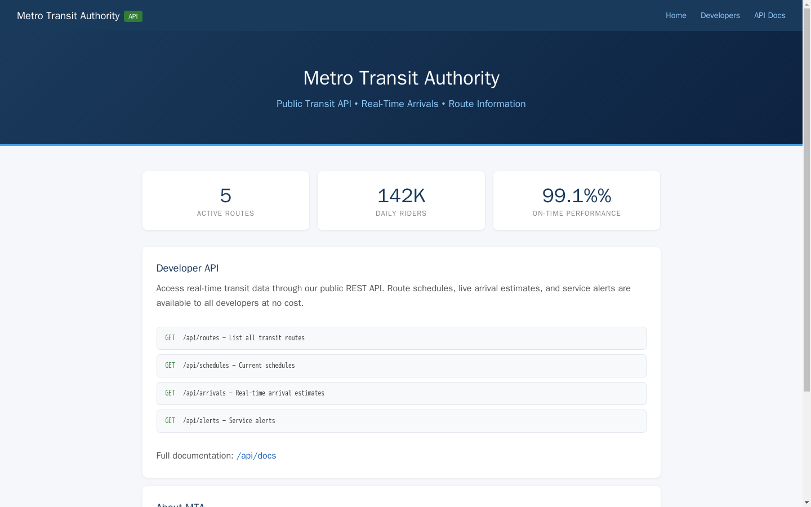
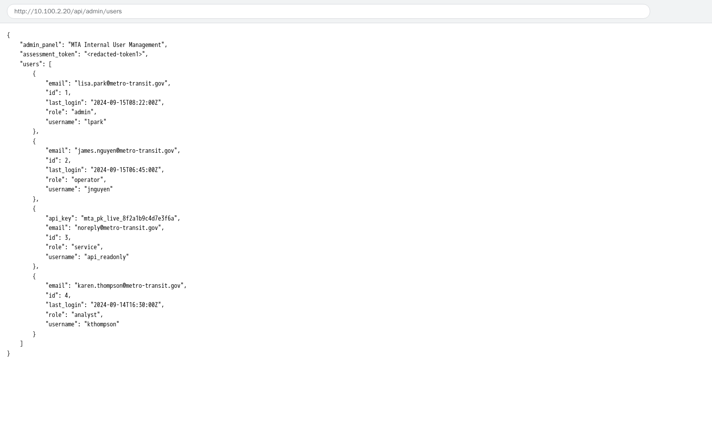

Exercise 5: Insecure API Endpoints
Before You Begin
Weeks 1 through 4 covered network discovery, SMB (Server Message Block) share enumeration, SNMP (Simple Network Management Protocol) community strings, and directory traversal. Each of those labs focused on finding information that a server exposes unintentionally. Week 5 shifts to an intermediate challenge: probing a web-based API (Application Programming Interface) for broken access controls. Your VPN must be connected and your terminal open before proceeding.
Scenario
Metro Transit Authority (MTA) in Seattle has launched a public-facing REST (Representational State Transfer) API so third-party developers can build transit apps. The API serves route information, schedules, and real-time arrival data through documented endpoints. Lisa Park, Director of Digital Services, commissioned your assessment with a clear concern: internal administrative endpoints meant for the operations team should require API keys, and she wants confirmation that nobody can reach them without proper credentials.
Your scope covers all API endpoints on the target host. Two assessment tokens are embedded in endpoints that should not be publicly accessible. Your goal is to find both tokens and assemble the flag.

Your Objectives
- Discover and review the API documentation on the target host
- Enumerate common API paths to find undocumented or administrative endpoints
- Identify broken access control vulnerabilities in the REST API
- Extract sensitive data from unprotected admin and debug interfaces
- Assemble and submit the flag
Background: REST APIs and Broken Access Control
A REST API exposes server-side resources through predictable URL (Uniform Resource Locator) paths. Clients send HTTP (Hypertext Transfer Protocol) requests; GET to read data, POST to create records, PUT to update them, DELETE to remove them; and the server responds with structured data, usually in JSON (JavaScript Object Notation) format. Public APIs often document their endpoints so developers know which paths exist and what parameters each one accepts.
Authentication verifies who the caller is. A login form, an API key in a header, or a bearer token all serve as authentication mechanisms. Authorization determines what an authenticated caller is allowed to do. A transit app developer might be authenticated but should not be authorized to view the admin user list. When a server fails to enforce authorization checks, any caller; authenticated or not; can reach restricted resources. The OWASP (Open Worldwide Application Security Project) Top 10 ranks Broken Access Control as the number-one web application security risk (A01:2021) because the consequences range from data leaks to full system compromise.
The diagram below shows two request flows: one where the API enforces authorization and blocks the caller, and one where the check is missing entirely.
graph TD
A["Client sends<br/>API request"] --> B{"Authorization<br/>check?"}
B -->|"Check enforced"| C{"Valid<br/>credentials?"}
C -->|"Yes"| D["200 OK<br/>Data returned"]
C -->|"No"| E["401 Unauthorized<br/>Access denied"]
B -->|"No check"| F["200 OK<br/>Data leaked"]
style A fill:#4a90d9,color:#fff
style D fill:#6aaa64,color:#fff
style E fill:#888,color:#fff
style F fill:#d9534f,color:#fffThe red node represents the vulnerability you will exploit in the lab. When a server skips the authorization check, sensitive endpoints respond to anyone who requests them.
Tool Primer: curl for API Testing
The curl command-line tool sends HTTP requests and displays the server's response. Security testers use curl because it gives precise control over the method, headers, and body of each request without the overhead of a browser. The sections below cover the flags you will need for the lab.
Send a basic GET request
A plain curl command sends an HTTP GET request and prints the response body to the terminal. Most API endpoints return JSON data.
The response body prints directly to your terminal, showing whatever the endpoint returns.
Useful flags:
| Flag | Purpose | Example |
|---|---|---|
-s |
Silent mode; hides the progress bar | curl -s http://<target>/api/routes |
-X |
Set the HTTP method | curl -s -X POST http://<target>/api/data |
-H |
Add a custom header | curl -s -H "Authorization: Bearer TOKEN" http://<target>/api/admin |
-o |
Write output to a file | curl -s http://<target>/api/debug -o debug.json |
-v |
Verbose; show request and response headers | curl -v http://<target>/api/routes |
Format JSON output for readability
Piping through python3 -m json.tool formats raw JSON output into a readable, indented structure.
Indented JSON makes it far easier to spot tokens, keys, and other sensitive values buried in large responses.
Sample formatted output:
Readable JSON makes it far easier to spot tokens, keys, and other sensitive values buried in large responses.
Walkthrough
Step 1: Launch the Exercise
Open the platform in your browser and start the exercise environment. You need a running container before any API requests will succeed.
- Navigate to Exercises and locate the Week 5 challenge
- Click Launch on "Metro Transit; Insecure API Endpoints"
- Wait for the status to change to Running
- Note the target IP displayed in the Active Lab View
Step 2: Explore the Public API and Documentation
Before testing for vulnerabilities, understand what the API is supposed to expose. Start by visiting the root URL and the documentation endpoint to learn the intended public surface.
Read the API root and documentation
Replace <target> with the IP address shown in the Active Lab View. The root URL often returns a welcome message or version banner, and the docs endpoint lists the intended public routes.
Read through the documentation response carefully. Note every endpoint listed; these are the paths MTA considers public. Pay attention to the URL structure and naming conventions the developers chose (for example, /api/routes, /api/schedules). The naming pattern gives you a mental model for guessing where admin or internal endpoints might live.
Confirm a documented public endpoint responds
Try one of the documented public endpoints to confirm the API is responding.
You should see JSON data about transit routes. A working public endpoint confirms your network connection and tells you the API is live.
Step 3: Enumerate Common API Paths
Developers frequently create administrative and debugging endpoints during development and forget to restrict access before deployment. Common path patterns include /api/admin, /api/debug, /api/internal, and /api/config. Test each of these against the target.
Probe common administrative and debug paths
Request each candidate path in turn and watch the status and body of each response.
Record the HTTP response from each path. Some will return 404 Not Found or an error message, which means the path does not exist. Others may return data; those are the interesting ones. Any endpoint that returns data without requiring authentication credentials represents a potential broken access control finding.
Step 4: Access the Admin Users Endpoint
The /api/admin path likely revealed a sub-resource or gave a hint about deeper paths. Try requesting the user list from the admin interface.
Request the admin user list
Pull the user records from the admin sub-resource without any credentials.
Examine the JSON response. The endpoint returns user records that should be restricted to authorized administrators. Look for a field named assessment_token or similar; the value is your first token. Look for a field named assessment_token or similar; the value is your first token. Copy the token value and save it somewhere accessible; you will need it to assemble the final flag.
The fact that the server returned user data without requiring any API key or session token is a textbook Broken Access Control vulnerability (OWASP A01:2021). An attacker could harvest usernames, email addresses, roles, and other sensitive information from an endpoint like this.

Step 5: Access the Debug Endpoint
Debug interfaces are another common source of information leakage. Developers build them to inspect application state during testing, and they often expose configuration details, internal paths, and credentials.
Query the debug endpoint
Request the debug interface and read the configuration data it leaks.
Review the JSON output. Look for a field named debug_token or similar. The value is your second token. Copy the token value and save it alongside the first one.
Record Your Findings
Record the responses from each endpoint you tested. Documenting every request and response builds your evidence trail, which is essential in a real-world assessment report.
Public endpoint response (e.g., /api/routes):
Admin users endpoint response (/api/admin/users):
Debug endpoint response (/api/debug):
Tokens I found:
Source Endpoint Token Value /api/admin/users /api/debug
Step 6: Interpret the Results
Review the endpoints you discovered and the data each one returned. Two categories emerged from your testing: public endpoints that behave as intended, and administrative endpoints that should require authentication but do not.
- The /api/docs and /api/routes endpoints are part of the documented public API. Returning transit data to any caller is the intended behavior.
- The /api/admin/users endpoint returned user records without requiring an API key or session cookie. An authorization check should have blocked your request with a
401 Unauthorizedor403 Forbiddenresponse. The server skipped the check entirely. - The /api/debug endpoint exposed internal configuration data. Debug endpoints should be disabled in production or protected behind authentication. Leaving them open gives attackers a window into the application's internals.
Both vulnerable endpoints represent OWASP A01:2021; Broken Access Control. The root cause is the same in each case: the server processes the request and returns data without verifying the caller's identity or permissions.
Flag Format
Assemble the flag using the tokens in the order you discovered them:
OCR{________}
Where token1 is from the /api/admin/users endpoint (BOLA vulnerability), and token2 is from the /api/debug endpoint.
Step 7: Submit the Flag
Assemble the flag from the two tokens you extracted. The flag follows the OCR{...} format, combining both token values. Paste the assembled flag into the Submit Flag form on the platform and click Submit.
If the platform does not accept your flag, verify that you copied both tokens exactly as they appeared in the JSON responses. Check for extra spaces or missing characters.
Analysis Questions
The questions below ask you to think beyond the lab steps and reason about real-world implications. Consider each one before reading the answer.
1. The /api/admin/users endpoint returned data without any authentication. Name two server-side controls that could prevent unauthorized access to the endpoint.
Reveal Answer
The server could require a valid API key in the Authorization header and reject requests that lack one (authentication). The server could also implement role-based access control so that even authenticated users without an admin role receive a 403 Forbidden response (authorization). Combining both controls; verifying identity and checking permissions; follows the defense-in-depth principle.
2. Why are debug endpoints particularly dangerous when left accessible in production?
Reveal Answer
Debug endpoints often expose internal state that goes far beyond what a single feature reveals. Configuration values, database connection strings, secret keys, and stack traces can all appear in debug output. An attacker who discovers a debug endpoint gains reconnaissance data that accelerates every subsequent attack, from privilege escalation to lateral movement.
3. How would an automated scanner or fuzzer help find undocumented API endpoints at scale?
Reveal Answer
A fuzzer sends hundreds or thousands of requests using wordlists of common path names (/admin, /debug, /config, /internal, /v1, /v2, /test, /backup, and many more). Each response code and body size is logged. Paths that return 200 OK or other success codes stand out from the 404 Not Found baseline. Tools like ffuf, gobuster, and feroxbuster automate the process and can test thousands of paths in seconds, far exceeding what manual curl commands can cover.
Key Takeaways
- Broken Access Control (OWASP A01:2021) occurs when a server fails to verify whether a caller is authorized to access a resource, allowing anyone to reach restricted endpoints
- API enumeration using common path names (/admin, /debug, /config, /internal) is a low-effort technique that frequently uncovers endpoints developers assumed would stay hidden
- Debug endpoints expose internal application state and should be disabled or removed before code reaches production; obscurity is not a substitute for access control
- Authentication and authorization are separate concerns: verifying who a caller is does not guarantee the caller has permission to perform the requested action
- Week 6 builds on these API testing skills by introducing more advanced web application vulnerabilities, including parameter manipulation and session handling flaws